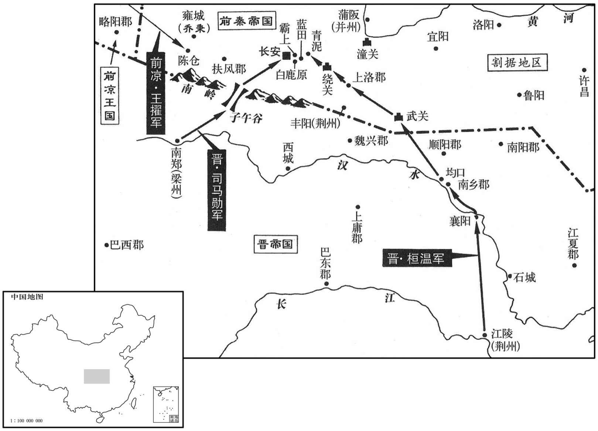

公元354年资治通鉴：本年记事、原文与白话对照
按原书编年位置阅读；追叙和史论不等于本年发生的事件。白话采用所据译本，缺译不以生成译文补齐。
卷99 · 本年记事
公元354年 · 晋孝宗穆皇帝永和十年
十年〔（甲寅、三五四）〕
上传原文的注释括号有异常，字符原样保留；无法可靠划分的段落默认全文显示。
本年事件索引（现代整理）
- 张祚称凉王，改元和平
- 过去魏投降过来的将领周成造反，从宛县出发袭击洛阳
- 前秦丞相苻雄克司竹
- 殷浩北伐连败，被桓温奏废
- 殷浩年轻时就和桓温齐名，双方暗自争胜
- 桓温率军伐秦，进逼长安
- 前燕卫将军慕容恪包围了鲁口
- 姚襄遣使者向前燕投降
- 桓温任慕容评统十州军
- 桓温击败秦军进至灞上
- 前秦丞相苻雄率领骑兵七千人在子午谷袭击司马勋
- 前燕主慕容俊封抚军将军慕容军为襄阳王
- 慕容俊命令冀州刺史、吴王慕容霸把治所迁到信都
- 江西的流民郭敞等一千多人挟持着陈留内史刘仕投降姚襄
- 王擢克陈仓，杀掉了前秦的扶风内史毛难
- 王猛拜访桓温论关中形势
- 桓温粮尽退兵，关中北伐失败
- 呼延毒率军一万人跟随桓温撤返
- 桓温驻扎在灞上的时候
- 前秦丞相苻雄在陈仓攻击司马勋、王擢，司马勋逃奔汉中
- 前秦任光禄大夫赵俱为洛州刺史，镇守宜阳
- 苻雄病卒，苻坚继承爵位
- 苻雄的儿子苻坚继承了爵位
- 朱秃杀慕容钩投奔段龛
- 苻健平定关中并整顿前秦
- 前燕大规模地征调兵众，根据发布诏令的日期
- 桓温从伐秦前线返回
- 有人向东晋朝廷报告
- 苻苌伤重病卒
- 燕王儁如龙城
- 王擢降秦，凉州内乱
- 前秦主苻健的叔父武都王苻安从东晋返回时，被姚襄俘虏
- 这一年，前秦发生严重饥荒

本年形势与背景参考图
春，正月，张祚自称凉王，改建兴四十二年为和平元年；〔河西张氏，乃心晋室，奉建兴年号至四十余年，张祚凶淫，改元僭拟，祖父之所不相也。〕立妻辛氏为王后，子太和为太子；封弟天锡为长宁侯，子庭坚为建康侯，〔建康郡，盖张氏所置，张茂分属凉州。〕曜灵弟玄靓为凉武侯；〔靓，疾正翻。〕置百官，郊祀天地，用天子礼乐。尚书马岌切谏，坐免官。〔岌，鱼及翻。〕郎中丁琪复谏曰：「我自武公以来，〔张轨谥武公。复，扶又翻。〕世守臣节，抱忠履谦五十余年，〔履谦，谓未尝建国自王也。惠帝永宁元年，张轨镇泛土，至是五十四年。〕故能以一州之众，抗举世之虏，师徒岁起，民不告疲。殿下勋德未高于先公，而亟谋革命，臣未见其可也。彼士民所以用命，四远所以归向者，以吾能奉晋室故也。今而自尊，则中外离心，安能以一隅之地拒天下之强敌乎！」祚大怒，斩之于阙下。〔自古戮谏臣，未有不亡者也。〕
春季，正月，张祚自称凉王，改建兴四十二年为和平元年。立妻子辛氏为王后，儿子张太和为太子。封弟弟张天锡为长宁侯，儿子张庭坚为建康侯，张曜灵的弟弟张玄靓为凉武侯。设置了百官，在郊外祭祀天地，使用天子的礼节器乐。尚书马岌恳切地加以劝谏，被加罪免官。郎中丁琪又劝谏他说：“我们自从武公张轨以来，历代谨守臣下的节义，胸怀忠诚，行事谦恭五十多年，所以才能用区区一州的兵众抵抗整个天下的敌人，虽然士兵连年征战，但百姓并不诉说困倦。殿下的功勋与德行并没有高出先公，然而却迫不及待地谋求改变命运，臣下没见过这样做能行得通的。那些士兵百姓之所以能够听命，远方的部族之所以能归附向往，就是因为我们能尊奉晋皇室的缘故。如今您自尊为帝，则会内外离心，还怎么能够靠一隅之地抗拒天下的强敌呢！”张祚勃然大怒，在宫殿前把丁琪杀掉了。
故魏降将周成反，〔周成降见上七年。降，户江翻。将，即亮翻。〕自宛袭洛阳。〔宛，于兄翻。〕辛酉，河南太守戴施奔鲔渚。〔水经注：河水过河南巩县，北有山临河，谓之崟原丘；其下有穴，谓之巩穴，言〔﹖〕潜通浦北，达于河；直穴有渚，谓之鲔渚。鲔，于轨翻。〕
过去魏国投降过来的将领周成造反，从宛县出发袭击洛阳。辛酉（十三日），河南太守戴施逃奔到鲔渚。
秦丞相雄克司竹；胡阳赤奔霸城，依呼延毒。
前秦丞相苻雄攻克司竹。胡阳赤逃奔到霸城，依附了呼延毒。
中军将军、扬州刺史殷浩连年北伐，师徒屡败，粮械都尽；征西将军桓温因朝野之怨，上疏数浩之罪，请废之。〔数，所具翻。〕朝廷不得已，免浩为庶人，徙东阳之信安。〔东阳郡本会稽西部都尉，吴孙暼宝鼎元年立郡。信安县，汉献帝初平三年，分太末立新安县，武帝太康元年，更名信安。东阳郡，唐为婺州。信安县，唐为衢州治所。〕自此内外大权一归于温矣。〔史言晋氏失权，由用殷浩违其才。〕
中军将军、扬州刺史殷浩连年北伐，士兵屡屡被打败，粮饷武器全都消耗殆尽。征西将军桓温借朝野上下对殷浩的怨愤，上书列举殷浩的罪行，请求将他黜免。朝廷不得已，将殷浩免官，贬为庶人，流放到东阳郡的信安县。从此，朝廷内外的大权统统集中在桓温手里了。
浩少与温齐名，〔少，诗照翻。〕而心竞不相下，温常轻之浩既废黜，虽愁怨不形辞色，常书空作「咄咄怪事」字。〔咄，当没翻。咄咄，嗟咨语也。〕久之，温谓掾郗超曰：〔掾，于绢翻。郗，丑之翻。〕「浩有德有言，向为令仆，足以仪刑百揆，朝廷用违其才耳。」将以浩为尚书令，以书告之。浩欣然许焉，将答书，虑有谬误，开闭者十数，竟达空函。温大怒，由是遂绝，卒于徙所。以前会稽内史王述为扬州刺史。〔卒，子恤翻。会，工外翻。〕
殷浩年轻时就和桓温齐名，双方暗自争胜，不相上下，但桓温经常轻视他。殷浩被废黜以后，虽然忧愁怨愤之情不形于色，但常常用手在空中书写“咄咄怪事”四个字。过了很久，桓温对手下的属官郗超说：“殷浩有德行，善言辞，假如以前让他出任尚书令或仆射，足以成为百官的楷模，朝廷对他的任用，配不上他本身的才能。”桓温准备任命殷浩为尚书令，写信告诉了他。殷浩对此欣然应允，在准备送出复信时，担心信中还有不妥之处，便拆开封检查了十多次，最后忙中出错，送达桓温手里的竟然只是一个空信封。桓温勃然大怒，从此断绝了启用殷浩的想法，殷浩死于流放之地。任命以前的会稽内史王述为扬州刺史。
二月，乙丑，桓温统步骑四万发江陵；水军自襄阳入均口，至南乡；〔水经注：顺阳郡糂阳县有涉都城，沔水径东北；均水于县入沔，谓之均口。糂阳与南乡县，汉皆属南阳郡；汉建安中，分南阳右壤立南乡郡，二县属焉；武帝更名顺阳郡，成帝咸康四年，复曰南乡郡。〕步兵自淅川趣武关；析县，前汉属弘农郡，后汉属南阳郡，春秋之白羽也。武关在其西。文颖曰：武关去析县百七十里。贤曰：析，即今邓州内乡县。后魏置淅川县，有淅水；后周并入内乡县。〕命司马勋出子午道以伐秦。〔命勋从梁州出师。〕
本段缺少可靠对应白话，原文完整保留；未使用生成译文。
燕卫将军恪围鲁口，三月，拔之。吕护奔野王，遣弟奉表谢罪于燕，燕以护为河内太守。
前燕国卫将军慕容恪包围了鲁口。三月，攻下了该地。吕护逃奔到野王，派弟弟上表向前燕谢罪，前燕任命吕护为河内太守。
姚襄遣使降燕。〔使，疏吏翻。降，户江翻。〕
姚襄派遣使者向前燕投降。
燕王儁以慕容评为镇南将军，都督秦、雍、益、梁、江、扬、荆、徐、兖、豫十州诸军事，权镇洛水；〔雍，于用翻。〕以慕容强为前锋都督，督荆、徐二州、缘淮诸军事，进据河南。〔此河南，谓大河之南。〕
前燕国主慕容俊任命慕容评为镇南将军，都督秦、雍、益、梁、江、扬、荆、徐、兖、豫十州诸军事，权且镇守洛水。任命慕容强为前锋都督，督察荆、徐二州，缘淮诸军事，他率兵前进，占据了黄河以南。
桓温别将上洛，获秦荆州刺史郭敬；进击青泥，破之。〔青泥城在蓝田县南。〕司马勋掠秦西鄙，凉秦州刺史王擢攻陈仓以应温。〔赵亡，王擢归张氏，故以凉系之。〕秦主健遣太子苌、〔苌，仲良翻。〕丞相雄、淮南王生、平昌王菁、北平王硕帅众五万军于峣柳以拒温。〔土地记曰：蓝田县南有峣关，地名峣柳，道通荆州。晋地道记曰：关当上洛县西北。帅，读曰率；下同。峣，五聊翻。〕夏，四月，己亥，温与秦兵战于蓝田。秦淮南王生单骑突陈，〔骑，奇寄翻；下同。陈，读曰阵。〕出入以十数，杀伤晋将士甚众。温督众力战，秦兵大败；将军桓冲又败秦丞相雄于白鹿原。〔水经注：霸川之西有白鹿原。三秦记曰：丽山西有白鹿原。魏收地形志，京兆蓝田县有白鹿原。又败，补迈翻。〕冲，温之弟也。温转战而前，壬寅，进至灞上。秦太子苌等退屯城南，秦主健与老弱六千固守长安小城，悉发精兵三万，遣大司马雷弱儿等与苌合兵以拒温。三辅郡县皆来降。〔降，户江翻。〕温抚谕居民，使安堵复业。民争持牛酒迎劳，〔劳，力到翻。〕男女夹路观之，耆老有垂泣者，曰：「不图今日复官军！」〔复，扶又翻。〕
桓温的另一位将领攻打上洛，俘获了前秦荆州刺史郭敬，继续前进，又攻破了青泥。司马勋夺取了前秦的西部边陲地带，前凉秦州刺史王擢攻打陈仓以接应桓温。前秦国主苻健派太子苻苌、丞相苻雄、淮南王苻生、平昌王苻菁、北平王苻硕率领五万兵众驻扎在柳，以阻击桓温。夏季，四月，己亥（二十二日），桓温与前秦军队在蓝田交战。前秦淮南王苻生单枪匹马冲入敌阵，往返十多次，杀死杀伤了众多的东晋将士。桓温督促兵众奋力拼搏，前秦军队终于被打得大败。将军桓冲又在白鹿原打败了前秦丞相苻雄。桓冲是桓温的弟弟。桓温转战前进，壬寅（二十五日），到达灞上。前秦太子苻苌等退守驻扎在城南，前秦国主苻健与六千老弱民众固守长安小城，把三万精锐兵士全部派出，让大司马雷弱儿等人与苻苌会合兵力，以抵抗桓温。三辅地区的郡县全都投降。桓温安抚告谕当地居民，让他们安居复业，当地的百姓争先恐后地带着酒肉迎接慰劳桓温的部队，男男女女夹道围观，有些老年人还激动地流下了眼泪，说：“没想到今天又见到了朝廷的军队！”
秦丞相雄帅骑七千袭司马勋于子午谷，破之，勋退屯女娲堡。
前秦丞相苻雄率领骑兵七千人在子午谷袭击司马勋，司马勋的部队被攻破，退守女娲堡。
戊申，燕主儁封抚军将军军为襄阳王，左将军彭为武昌王；以卫将军恪为大司马、侍中、大都督、录尚书事，封太原王；镇南将军评为司徒、骠骑将军，封上庸王；〔骠，匹妙翻。〕封安东将军霸为吴王；左贤王友为范阳王，散骑常侍厉为下邳王，散骑常侍宜为庐江王，〔散，悉亶翻。〕宁北将军度为乐浪王；〔乐浪，音洛琅。〕又封弟桓为宜都王，逮为临贺王，徽为河间王，龙为历阳王，纳为北海王，秀为兰陵王，岳为安丰王，德为梁公，默为始安公，偻为南康公；〔偻，陇主翻。〕子咸严：「咸」改「臧」。】〕〔参考后卷，「咸」，当作「臧」。〕为乐安王，亮为勃海王，温为带方王，涉为渔阳王，暐为中山王；以尚书令阳骛为司空，仍守尚书令。
戊申（疑误），前燕国主慕容俊封抚军将军慕容军为襄阳王，左将军慕容彭为武昌王。任命卫将军慕容恪为大司马、侍中、大都督、录尚书事，并封为太原王。任命镇南将军慕容评为司徒、骠骑将军，并封为上庸王。封安东将军慕容霸为吴王，左贤王慕容友为范阳王，散骑常侍慕容厉为下邳王，散骑常侍慕容宜为庐江王，宁北将军慕容度为乐浪王。还对他的弟弟们进行了赐封：慕容桓为宜都王，慕容逮为临贺王，慕容徽为河间王，慕容龙为历阳王，慕容纳为北海王，慕容秀为兰陵王，慕容岳为安丰王，慕容德为梁公，慕容默为始安公，慕容偻为南康公。封儿子慕容臧为乐安王，慕容亮为勃海王，慕容温为带方王，慕容涉为渔阳王，慕容为中山王。任命尚书令阳鹜为司空，仍旧职守尚书令。
命冀州刺史吴王霸徙治信都。〔去年霸治常山。〕初，燕王皝奇霸之才，故名之曰霸，将以为世子；群臣谏而止，然宠遇犹踰于世子。由是儁恶之，〔恶，乌路翻；下同。〕以其尝墬马折齿，更名曰廃；〔更，工衡翻；下同。廃，倾雪翻。〕寻以其应谶文，更名曰垂；迁侍中，录留台事，徙镇龙城。垂大得东北之和，儁愈恶之，复召还。〔儁虽忌垂，卒之复燕祚者垂也。天之所置，其可废乎！〕
慕容俊命令冀州刺史、吴王慕容霸把治所迁到信都。当初，前燕王慕容认为慕容霸才能卓越，所以给他起名叫“霸”，准备以他作为太子。因为群臣的劝谏，最终没这样做，然而对他的宠爱程度仍然超过了太子。因此慕容俊很嫉妒，便以慕容霸曾经从马背上摔下来摔坏了牙齿为由，把他的名字改为“”。不久又以他应验了谶文中的谶语为由，改其名为“垂”。慕容垂升迁为侍中，总领留台事务，被调动去镇守龙城。慕容垂深得东北民众的拥戴，慕容俊对他越发嫉妒，又召他返回。
五月，江西流民郭敞等〔【章：十二行本「等」下有「千余人」三字；乙十一行本同；孔本同。】〕执陈留内史刘仕，降于姚襄。〔晋南渡后，陈留郡寄治谯郡长垣县界。按载记，刘仕时在堂邑。〕建康震骇，以吏部尚书周闵为中军将军，屯中堂，豫州刺史谢尚自历阳还卫京师，固江备守。
五月，江西的流民郭敞等一千多人挟持着陈留内史刘仕投降了姚襄。东晋朝廷十分震惊，任命吏部尚书周闵为中军将军，驻扎宫中，豫州刺史谢尚从历阳返回，戍卫京师，加固长江防线，严密守备。
王擢拔陈仓，杀秦扶风内史毛难。
王擢攻克陈仓，杀掉了前秦的扶风内史毛难。
北海王猛，少好学，〔少，诗照翻。好，呼到翻。〕倜傥有大志，不屑细务，人皆轻之。猛悠然自得，隐居华阴。〔王猛传：猛，北海剧人，家于魏郡，徐统召而不应，遂隐于华阴山。华阴县，前汉属京兆，后汉、晋属弘农郡。倜，他狄翻。华，户化翻。〕闻桓温入关，披褐诣之，扪虱而京谈当世之务，〔褐，毛布。虱，色栉翻。〕旁若无人。温异之，问曰：「吾奉天子之命，将锐兵十万为旦姓除残贼，〔将，即亮翻。为，于伪翻。〕而三秦豪杰未有至者，何也﹖」猛曰：「公不远数千里，深入敌境，今长安咫尺而不渡灞水，百姓未知公心，所以不至。」温嘿然无以应，徐曰：「江东无卿比也！」〔猛盖指出温之心事，以为温之伐秦，但欲以功名镇服江东，非真有心于伐罪吊民，恢境境土；不然，何以不渡灞水，径攻长安﹖此温所以无以应也。然余观桓温用兵，伐秦至灞上，伐燕至枋头，皆乘胜进兵，逼其国都，乃持重观望，卒以取败。盖温，奸雄也，乘胜进兵，逼其国都，冀其望风畏威，有内溃之变也。逼其国都而敌无内变，故持重以待之；情见势屈，敌因而乘之，故至于败。苏子由所谓以智遇智，则其智不足恃者此也。〕乃署猛军谋祭酒。
北海人王猛，从小好学，才能卓越，胸怀大志，不屑于琐碎事务，人们都轻视他。王猛却悠然自得，隐居于华阴。当他听说桓温入关后，便披着粗布衣服去拜访他，边摸着虱子边谈论当时的大事，旁若无人。桓温觉得他与众不同，便问道：“我奉天子之命，统帅十万精兵为百姓消灭残存的寇贼，然而三秦的豪杰之士至今没有人前来归附，这是为什么呢？”王猛说：“您不远数千里，深入敌土，如今长安近在咫尺而您却不横渡灞水，百姓们不知道您的意图，所以不来。”桓温沉默不语，无以应答，过了一会儿说：“长江以南没有人能和你相比！”于是就安排王猛暂任军谋祭酒。
温与秦丞相雄等战于白鹿原，温兵不利，死者万余人。初，温指秦麦以为粮，既而秦人悉芟麦，清野以待之，温军乏食。六月，丁丑，徙关中三千余户而归。以王猛为高官督护，〔职为督护，而加之以高官也。魏、晋之间，凡居节镇者，其部将有督护，其后又置高官督护。王敦镇武昌，有高官督护缪坦，〕欲与俱还，猛辞不就。〔猛不肯从温，温岂不欲之邪！盖温军已败，忽忽退师，不暇杀之也。〕
桓温与前秦丞相苻雄等在白鹿原交战，桓温的军队失利，死亡一万多人。当初，桓温指望以前秦地区的麦子来作军粮，后来前秦人把麦子全都收割了，等待桓温的只有经过清理的空旷农田，所以桓温的军队军粮匮乏，六月，丁丑（初一），桓温裹挟关中的三千多户人家开始撤返。任命王猛为高官督护，想让他和自己一同返回，王猛坚决推辞，不予接受。
呼延毒帅众一万从温还。〔帅，读曰率。〕秦太子苌等随温击之，比至潼关，〔比，必寐翻。〕温军屡败，失亡以万数。
呼延毒率领兵众一万人跟随桓温撤返。前秦太子苻苌等人则紧紧追击桓温，一路上桓温的军队屡战屡败，等到抵达潼关时，兵士损失死亡已数以万计。
温之屯灞上也，顺阳太守薛珍劝温径进逼长安；〔成帝改顺阳曰南乡郡，既而复旧。〕温弗从。珍以偏师独济，颇有所获。及温退，乃还，显言于众，自矜其勇而咎温之持重；温杀之。
桓温驻扎在灞上的时候，顺阳太守薛珍劝说桓温直接进逼长安，桓温没有听从。薛珍就带领一部分军队独自渡过灞水，很有收获。等到桓温撤退时，他返了回来，向兵众大肆炫耀，自夸他的勇敢果断而责怪桓温的谨小慎微。桓温把他杀掉了。
秦丞相雄击司马勋、王擢于陈仓，〔勋自女娲堡会擢攻陈仓。〕勋奔汉中，擢奔略阳。
前秦丞相苻雄在陈仓攻击司马勋、王擢，司马勋逃奔汉中，王擢逃奔略阳。
秦以光禄大夫赵俱为洛阳〔【章：十二行本「阳」作「州」；乙十一行本同；孔本同；张校同。】〕刺史，镇宜阳。
前秦任命光禄大夫赵俱为洛州刺史，镇守宜阳。
秦东海敬武王雄攻乔秉于雍；〔雍，于用翻。〕丙申，卒。秦主健哭之呕血，曰：「天不欲吾平四海邪！何夺吾元才之速也﹖」〔苻雄，字符才。〕赠魏王，葬礼依晋安平献王故事。雄以佐命元勋，〔【章：十二行本「勋」下有「位兼将相」四字；乙十一行本同；退斋校同。】〕权侔人主，而谦恭泛爱，遵奉法度，故健重之，常曰：「元才，吾之周公也。」
前秦东海敬武王苻雄在雍县攻打乔秉。丙申（二十日），苻雄去世。前秦国主苻健哭他哭得吐了血，说：“上天不想让我平定四海呀！要不为什么这么快就夺去了我的苻雄呢？”追赠苻雄为魏王，葬礼依据过去晋朝安平献王的遗规。苻雄虽然具有辅国元勋的身份，权力近于君主，然而却态度谦恭，泛爱民众，遵奉法度，所以苻健非常看重他，经常说：“苻雄是我的周公。”
子坚袭爵。〔坚袭爵东海王。〕坚性至孝，幼有志度，博学多能，交结英豪，吕婆楼、强汪及略阳梁平老皆与之善。〔苻坚事始此。〕
苻雄的儿子苻坚继承了爵位。苻坚生性极其孝顺，从小就有远大的志向和不凡的气度，博学多能，结交英豪，吕婆楼、强汪及略阳人梁平老全都和他关系很好。
燕乐陵太守慕容钩，翰之子也，〔慕容翰有破高句丽灭宇文之功。〕与青州刺史朱秃共治厌次。〔厌，于琰翻。〕钩自恃宗室，每陵侮秃。秃不胜忿，〔胜，音升。〕秋，七月，袭钩，杀之，南奔段龛。〔为后燕主诛秃张本。〕
前燕乐陵太守慕容钩，是慕容翰的儿子，和青州刺史朱秃共同治理厌次。慕容钩自恃是宗室嫡传，经常欺负侮辱朱秃。朱秃按捺不住愤怒，秋季，七月，袭击慕容钩，并杀掉了他，然后南逃，投奔段龛。
秦太子苌攻乔秉于雍，八月，斩之，关中悉平。秦主健赏拒桓温之功，以雷弱儿为丞相，毛贵为太傅，鱼遵为太尉，淮南王生为中军大将军，平昌王菁为司空。健勤于政事，数延公卿〔数，所角翻。〕咨讲治道；〔治，直吏翻。〕承赵人苛虐奢侈之后，易以宽简、节俭，崇礼儒士，由是秦人悦之。
前秦太子苻苌在雍县攻打乔秉，八月，将他斩杀，关中全部平定。前秦国主苻健封赏抵御桓温的功臣，任命雷弱儿为丞相，毛贵为太傅，鱼遵为太尉，淮南王苻生为中军大将军，平昌王苻菁为司空。苻健勤于政事，经常邀请手下大臣，询问讨论治国之道。继后赵人的苛刻残暴、奢侈浪费之后，他改行宽容简略、节约勤俭、尊重懦士的政策，因此前秦人非常喜欢他。
燕大调兵众，〔调，徒钓翻，发也。〕因发诏之日，号曰「丙戌举」。
前燕大规模地征调兵众，根据发布诏令的日期，这次征调称为“丙戌举”。
九月，桓温还自伐秦，帝遣侍中、黄门劳温于襄阳。〔侍中、黄门侍郎，自魏以来为要近之职。劳，力到翻。〕
九月，桓温从伐秦前线返回，东晋穆帝派侍中、黄门侍郎在襄阳慰劳桓温。
或告燕黄门侍郎宋斌等谋春冉智为主而反，皆伏诛。斌，烛之子心。〔宋烛见九十六卷成帝咸康四年。斌，音彬。〕
有人向东晋朝廷报告，说前燕的黄门侍郎宋斌等人谋划尊奉冉智为主造反。他们全都被杀。宋斌是宋烛的儿子。
秦太子苌之拒桓温也，为流矢所中，〔中，竹仲翻。〕冬，十月，卒，谥曰献哀。
前秦太子苻苌抵御桓温进攻的时候，被流箭射中，冬季，十月，去世，追封谥号为献哀。
燕王儁如龙城。
本段缺少可靠对应白话，原文完整保留；未使用生成译文。
桓温之入关也，王擢遣使告凉王祚，〔使，疏吏翻。〕言温善用兵，其志难测。祚惧，且畏擢之叛己，遣人刺之。〔刺，七亦翻。〕事泄，祚益惧，大发兵，声言东伐，实欲西保敦煌，〔敦，徒门翻。〕会温还而止。既而遣秦州刺史牛霸等帅兵三千击擢，破之。十一月，擢帅众降秦，〔帅，读曰率。降，户江翻。〕秦以擢为尚书，以上将军啖铁为秦刺史。〔啖，氐姓也。毛晃曰：音徒览翻。〕
桓温入关的时候，王擢派遣使者向前凉王张祚报告，说桓温善于用兵，他的志向难以猜测。张祚十分害怕，而且担心王擢背叛自己，于是就派人去刺杀王擢。事情败露，张祚更加害怕，于是大举出兵，声称要去东伐，实则想西退保全敦煌，恰好这时桓温撤兵返回，他才停止了行动。接着又派秦州刺史牛霸等人率领三千士兵攻打王擢，王擢被打败。十一月，王擢率领兵众投降了前秦，前秦任命他为尚书，任命上将军啖铁为秦州刺史。
秦王健叔父武都王安自晋还，〔健遣安来请朝命，见上卷六年。〕为姚襄所虏，以为洛州刺史。十二月，安亡归秦，健以安为大司马、骠骑大将军、并州刺史，镇蒲阪。〔骠，匹妙翻。〕
前秦国主苻健的叔父武都王苻安从东晋返回时，被姚襄俘虏，任命他为洛州刺史。十二月，苻安逃回到了前秦，苻健任命他为大司马、骠骑大将军、并州刺史，镇守蒲阪。
是岁，秦大饥，米一升值布一匹。
这一年，前秦发生严重饥荒，一升米价值一匹布。
译本中未与胡注本可靠对应的内容
以下另列供核对版本差异，不并入胡注本正文。
译本所附古文
[5]二月，乙丑，桓温统步骑四万发江陵；水军自襄阳入均口，至南乡；步兵自淅川趣武关；命司马勋出子午道以伐秦。
译本白话
二月，乙丑（疑误），桓温统领步兵和骑兵四万人从江陵出发。水军从襄阳进入均口，抵达南乡；步兵从淅川直奔武关。命令司马勋出子午道去讨伐前秦。
译本所附古文
[23]燕王俊如龙城。
译本白话
前燕国主慕容俊到龙城。